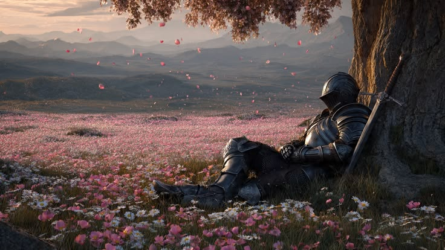
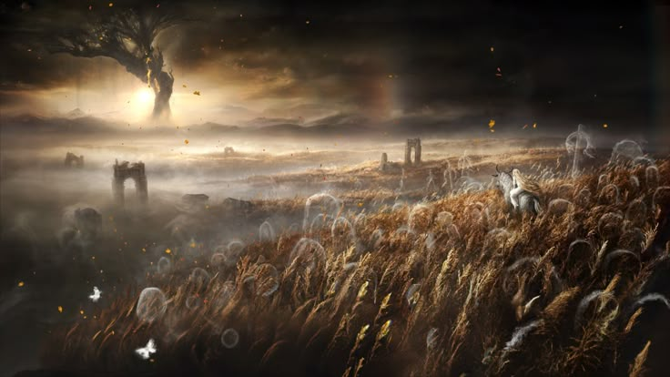
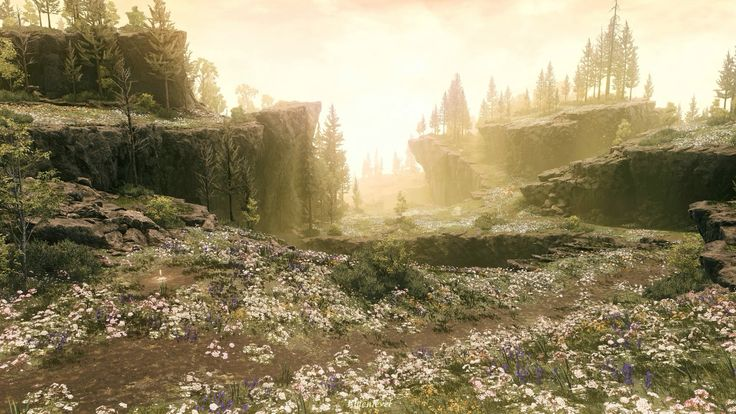
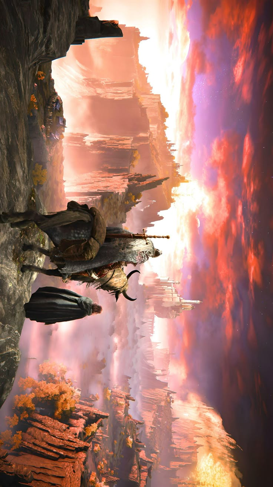

i played elden ring for six hours straight last night and when i put the controller down i realized i'd been processing something the whole time.
elden ring is a game about trying and failing and trying again in a world that doesn't care if you fail. in a world that is actively indifferent to your suffering. which is, metaphorically, a lot like being alive.
i think what these open world games actually give me is permission to be slow. to move through a world without optimizing. to stop at a cliffside not because there's a reason to stop but because the light is doing something interesting and i want to look at it. that's not something i do in real life very often. but in elden ring i do it constantly.




there's something cathartic in that when you're living in a time where everything requires you to be adequate at things you're not yet adequate at. the game doesn't pretend that's not hard. doesn't soften it. just keeps asking: do you want to try again. and you keep saying yes.
somewhere around hour five i was fighting the same boss i've been fighting for three days. kept dying. should have been frustrated. was actually calmer than i've been in weeks. not because i wasn't trying. because i was trying and i knew trying was enough. knew that eventually the patterns would click and i'd know how to move. fought for two more hours and eventually won.
real life doesn't work that way. the patterns don't always emerge. the trying sometimes isn't enough. the boss sometimes wins permanently. but for six hours i got to exist in a world where trying meant something. i'll take it.
← Back to Blog